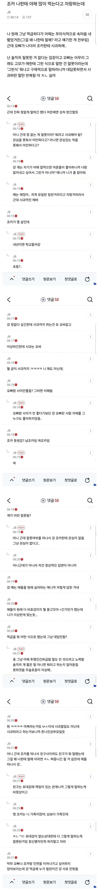

조카가 "나 야채 많이 먹는다"고 자랑하자 "그걸 왜 나한테 말해?"
댓글
아이들은 별것도 아닌거로 자랑하고 함. 나도 잘 못받아주는데 받아주려고 노력은 하지. 저새끼는 그냥 하는짓이 주위에 아무도 없는 찐따 새끼 이상인듯. 그래도 가족에게라도 잘해야지ㅡ
공감능력이 없으니 커뮤에다가 저런 글 써대는 거지 뭘.
댓글보면 진심으로 오빠를 안좋아하는데 그 자식을 좋아하겠나?
충분히 저런 반응 나올 수 있음
가족이라고 다 친하게 지내야하고 그런건 옛날이야기지
그냥 저 둘은 평생 안보고 서로 갈길 가는게 맞음
오빠가 아직 동생에대한 애정이 있네.
아랫사람을 대하는법 교육시키려는거 보면
못 배워먹은 능지의 문제